7 Chapter 4: Software Architecture and Design Patterns
7.1 Learning Objectives
By the end of this chapter, you will be able to:
- Define software architecture and explain its importance in system development
- Compare and contrast major architectural styles and patterns
- Apply the SOLID principles to create maintainable, flexible designs
- Recognize and implement common creational, structural, and behavioral design patterns
- Make informed architectural decisions based on system requirements
- Create a Software Architecture Document (SAD) for a project
- Evaluate trade-offs between different architectural approaches
7.2 4.1 What Is Software Architecture?
When you look at a building, you don’t see a random pile of bricks, steel, and glass. You see structure: floors stacked upon floors, walls dividing spaces, a roof keeping out the rain. That structure isn’t accidental—an architect designed it to serve the building’s purpose while meeting constraints of physics, budget, and building codes.
Software systems have architecture too. While you can’t see or touch it, the architecture profoundly affects how the system behaves, how it can be modified, and whether it will succeed or fail over its lifetime.
Software architecture refers to the fundamental structures of a software system, the discipline of creating such structures, and the documentation of these structures. It encompasses the high-level decisions about how components are organized, how they communicate, and how the system achieves its quality requirements.
7.2.1 4.1.1 Why Architecture Matters
Architecture decisions are among the most consequential choices in software development. They’re also among the hardest to change later.
Early decisions with lasting impact: Architectural choices made in the first weeks of a project constrain what’s possible for years afterward. Choosing a monolithic architecture means you can’t easily scale individual components. Choosing microservices means you need to handle distributed system complexity. Neither choice is inherently right or wrong, but both have long-lasting consequences.
Quality attributes depend on architecture: How fast is your system? How reliable? How secure? How easy to modify? These quality attributes aren’t primarily determined by code quality—they emerge from architectural decisions. A well-designed system can be fast and reliable even with some sloppy code. A poorly architected system will struggle no matter how carefully each line is written.
Communication framework: Architecture provides a vocabulary for discussing the system. When you say “the payment service calls the order service,” everyone understands what you mean. Without architecture, conversations about the system devolve into discussions of individual files and functions.
Risk management: Architectural decisions address the biggest risks in a project. If scalability is critical, the architecture must support it from the start. If security is paramount, architectural controls must be in place. Trying to add these qualities later is expensive at best, impossible at worst.
7.2.2 4.1.2 Architecture vs. Design
People often confuse software architecture with software design, and the boundary between them is genuinely fuzzy. Here’s a useful distinction:
Architecture concerns the decisions that are:
- Hard to change later
- Affect multiple components or the entire system
- Related to quality attributes (performance, security, maintainability)
- About structure at a high level of abstraction
Design concerns the decisions that are:
- Relatively easy to change
- Affect individual components or modules
- Related to implementing specific functionality
- About structure at a lower level of abstraction
Consider a house analogy: Architecture is deciding to have three stories, placing load-bearing walls, and running plumbing through certain walls. Design is choosing cabinet hardware, paint colors, and light fixtures. You can change the paint without affecting the building’s structure; you can’t easily move a load-bearing wall.
In software, architecture might decide that the system uses a microservices approach with an API gateway, message queues for asynchronous communication, and a separate database per service. Design might decide that a particular service uses the Repository pattern for data access, or that a specific class uses the Strategy pattern for algorithm selection.
The line between architecture and design shifts based on context. In a small application, the decision to use a particular database might be “just design.” In a large enterprise system, that same decision might be architectural because it affects so many components.
7.2.3 4.1.3 The Role of the Software Architect
In some organizations, “software architect” is a formal title held by senior technical staff. In others, architecture is a responsibility shared among the team. Either way, architectural thinking involves:
Understanding requirements: Both functional requirements and quality attributes (often called non-functional requirements). A system that needs to handle 100 users has different architectural needs than one serving 10 million.
Making trade-offs: Every architectural decision involves trade-offs. Microservices offer scalability but add complexity. Caching improves performance but risks stale data. The architect’s job is to make these trade-offs explicitly and wisely.
Communicating decisions: Architecture must be documented and communicated. If the team doesn’t understand the architecture, they’ll inadvertently undermine it with every coding decision.
Evolving the architecture: Requirements change. Technology evolves. Architectures must adapt. The best architectures anticipate change and make evolution possible.
7.3 4.2 Architectural Styles and Patterns
An architectural style is a named collection of architectural decisions that are commonly applied in a given context, along with the constraints that produce certain desirable qualities. Think of architectural styles as templates or patterns that have proven effective for certain types of systems.
Let’s explore the major architectural styles you’ll encounter in modern software development.
7.3.1 4.2.1 Layered Architecture
The layered architecture (also called n-tier architecture) organizes the system into horizontal layers, each providing services to the layer above it and consuming services from the layer below.
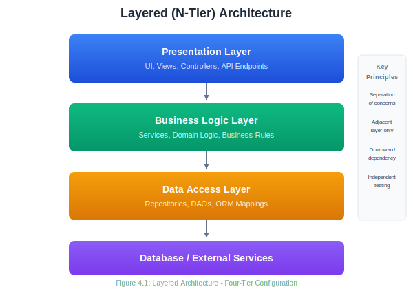
Key Principles:
- Each layer has a specific responsibility
- Layers only communicate with adjacent layers (typically downward)
- Higher layers depend on lower layers, not vice versa
- Each layer can be developed and tested somewhat independently
Common Layer Configurations:
Three-tier architecture:
- Presentation (UI)
- Business Logic
- Data
Four-tier architecture:
- Presentation
- Application/API
- Business Logic
- Data
Advantages:
- Separation of concerns: Each layer focuses on one aspect of the system
- Testability: Layers can be tested independently with mocks for adjacent layers
- Maintainability: Changes to one layer typically don’t affect others
- Team organization: Different teams can work on different layers
- Familiar pattern: Well understood by most developers
Disadvantages:
- Performance overhead: Requests must pass through all layers
- Monolithic deployment: Usually deployed as a single unit
- Rigidity: Strict layering can feel constraining
- God classes risk: Business logic layer can become bloated
When to Use:
- Traditional enterprise applications
- Applications with clear separation between presentation, logic, and data
- Teams familiar with this pattern
- Systems where simplicity is valued over flexibility
Example Structure (Web Application):
src/
├── presentation/
│ ├── controllers/
│ │ ├── UserController.java
│ │ └── OrderController.java
│ └── views/
│ └── ...
├── business/
│ ├── services/
│ │ ├── UserService.java
│ │ └── OrderService.java
│ └── domain/
│ ├── User.java
│ └── Order.java
├── data/
│ ├── repositories/
│ │ ├── UserRepository.java
│ │ └── OrderRepository.java
│ └── entities/
│ └── ...
└── config/
└── ...7.3.2 4.2.2 Model-View-Controller (MVC)
MVC is an architectural pattern that separates an application into three interconnected components, originally developed for desktop GUIs but now ubiquitous in web applications.
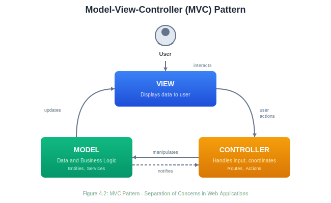
Components:
Model: Manages the data, logic, and rules of the application. It’s independent of the user interface. When data changes, the model notifies observers (often the view).
View: Presents data to the user. It receives data from the model and renders it. Multiple views can display the same model data differently.
Controller: Accepts input from the user (via the view), converts it to commands for the model or view. It’s the intermediary between user interaction and system response.
MVC Variants:
Traditional MVC (as above): Model notifies View directly of changes.
MVP (Model-View-Presenter): The Presenter mediates all communication between Model and View. The View is passive.
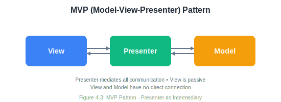
MVVM (Model-View-ViewModel): Common in modern frontend frameworks. ViewModel exposes data streams that the View binds to.
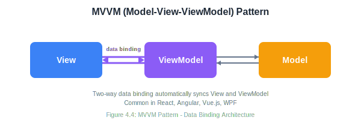
MVC in Web Frameworks:
Most web frameworks implement a variation of MVC:
- Ruby on Rails: Traditional MVC with ActiveRecord models
- Django: Often called MTV (Model-Template-View)
- Spring MVC: Java-based MVC framework
- ASP.NET MVC: Microsoft’s MVC implementation
- Express.js: Flexible, but commonly structured as MVC
Example Flow (Web Application):
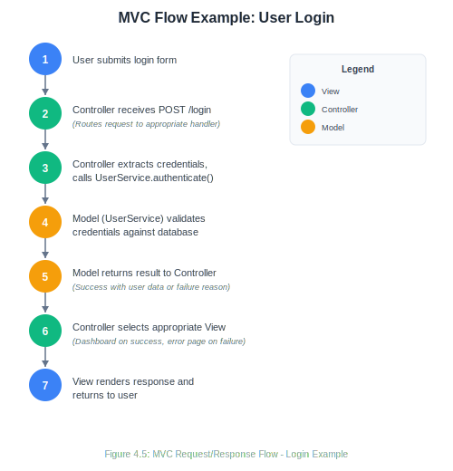
Advantages:
- Clear separation of concerns
- Multiple views for same data
- Easier testing (test model independently)
- Parallel development (UI team and backend team)
- Well-supported by many frameworks
Disadvantages:
- Can be complex for simple applications
- Controllers can become bloated (“fat controllers”)
- Tight coupling between View and Controller
- Learning curve for proper implementation
7.3.3 4.2.3 Microservices Architecture
Microservices architecture structures an application as a collection of small, autonomous services that communicate over a network. Each service is independently deployable, scalable, and can be written in different programming languages.

Key Characteristics:
- Single responsibility: Each service does one thing well
- Autonomy: Services are independently deployable
- Decentralized data: Each service manages its own database
- Smart endpoints, dumb pipes: Services contain the logic; communication infrastructure is simple
- Design for failure: Services expect other services to fail
- Evolutionary design: Easy to replace or rewrite individual services
Service Communication:
Synchronous (Request-Response):
- REST APIs over HTTP
- gRPC for high-performance communication
- GraphQL for flexible querying
Asynchronous (Event-Based):
- Message queues (RabbitMQ, Amazon SQS)
- Event streaming (Apache Kafka)
- Pub/sub patterns
Common Microservices Patterns:
API Gateway: Single entry point that routes requests to appropriate services, handles cross-cutting concerns (authentication, rate limiting).
Service Discovery: Services register themselves and discover other services dynamically (Consul, Eureka, Kubernetes).
Circuit Breaker: Prevents cascade failures by stopping calls to failing services temporarily.
Saga Pattern: Manages distributed transactions across multiple services.
Advantages:
- Independent deployment: Update one service without deploying the entire system
- Technology flexibility: Use different languages/frameworks for different services
- Scalability: Scale individual services based on demand
- Resilience: Failure in one service doesn’t bring down the whole system
- Team autonomy: Teams own their services end-to-end
- Easier to understand: Each service is small and focused
Disadvantages:
- Distributed system complexity: Network failures, latency, data consistency
- Operational overhead: Many services to deploy, monitor, and manage
- Testing challenges: Integration testing is complex
- Data consistency: No ACID transactions across services
- Initial development speed: More infrastructure to set up
- Debugging difficulty: Requests span multiple services
When to Use:
- Large, complex applications
- Systems requiring high scalability
- Organizations with multiple autonomous teams
- Systems with varying scalability needs across components
- When technology diversity is beneficial
When to Avoid:
- Small applications or startups (start with a modular monolith)
- Teams without DevOps expertise
- Applications where strong consistency is critical
- When operational maturity is low
7.3.4 4.2.4 Event-Driven Architecture
Event-driven architecture (EDA) is built around the production, detection, consumption, and reaction to events. An event represents a significant change in state.

Key Concepts:
Event: A record of something that happened. Events are immutable facts. “OrderPlaced,” “UserRegistered,” “PaymentReceived.”
Event Producer: A component that detects or creates events and publishes them.
Event Consumer: A component that listens for events and reacts to them.
Event Channel: The mechanism that transports events from producers to consumers (message queue, event stream).
Event-Driven Patterns:
Simple Event Notification: Producer publishes an event; consumers react. The event contains minimal data—just that something happened.
Event: { type: "OrderPlaced", orderId: "12345", timestamp: "..." }Event-Carried State Transfer: Events contain all data needed by consumers, reducing the need for callbacks.
Event: {
type: "OrderPlaced",
orderId: "12345",
customer: { id: "789", name: "Alice", email: "..." },
items: [...],
total: 150.00
}Event Sourcing: Instead of storing current state, store the sequence of events that led to current state. The current state is derived by replaying events.
Events for Account #123:
1. AccountOpened { amount: 0 }
2. Deposited { amount: 100 }
3. Withdrawn { amount: 30 }
4. Deposited { amount: 50 }
Current balance: 0 + 100 - 30 + 50 = 120CQRS (Command Query Responsibility Segregation): Separate models for reading and writing data. Often combined with event sourcing.
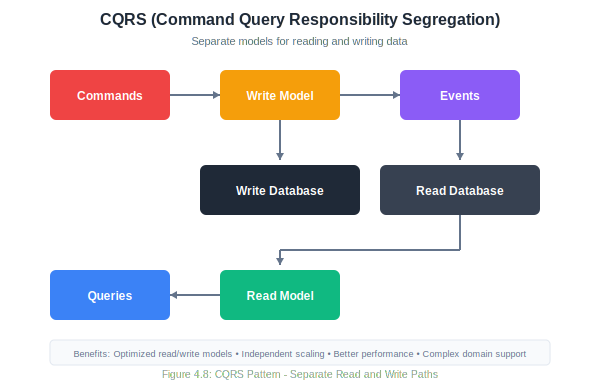
Advantages:
- Loose coupling: Producers don’t know about consumers
- Scalability: Consumers can be scaled independently
- Flexibility: Easy to add new consumers without changing producers
- Responsiveness: Asynchronous processing improves perceived performance
- Audit trail: Events provide natural logging
- Temporal decoupling: Producers and consumers don’t need to be available simultaneously
Disadvantages:
- Complexity: Harder to trace the flow of operations
- Eventual consistency: Data may be inconsistent temporarily
- Debugging difficulty: Asynchronous flows are hard to debug
- Event ordering: Ensuring correct order across distributed systems is challenging
- Event schema evolution: Changing event formats requires careful migration
When to Use:
- Systems with many independent components
- High-throughput systems with varying load
- Systems requiring real-time reactions
- Audit and compliance requirements
- Complex workflows spanning multiple services
7.3.5 4.2.5 Monolithic Architecture
Before moving on, let’s acknowledge the monolithic architecture—often presented as the opposite of microservices, but still a valid choice for many systems.
A monolith is a single deployable unit containing all application functionality.

Advantages:
- Simple to develop, test, deploy, and scale (initially)
- No distributed system complexity
- Easy debugging and tracing
- ACID transactions across the whole application
- Lower operational overhead
Disadvantages:
- Harder to scale specific components
- Technology stack is uniform
- Large codebase becomes unwieldy
- Deployment requires full redeployment
- Team coordination becomes challenging as system grows
The Modular Monolith:
A middle ground between monolith and microservices. The application is deployed as one unit but internally organized into well-defined, loosely-coupled modules.

Each module:
- Has a well-defined public API
- Keeps implementation details private
- Could have its own database schema
- Communicates with other modules only through APIs
This approach provides many benefits of microservices (modularity, team ownership, clear boundaries) while avoiding distributed system complexity. It’s often a good starting point, with the option to extract modules into microservices later if needed.
7.3.6 4.2.6 Comparing Architectural Styles

7.4 4.3 The SOLID Principles
The SOLID principles are five design principles that help developers create software that is easy to maintain, understand, and extend. Introduced by Robert C. Martin (Uncle Bob), these principles apply at the class and module level but inform architectural decisions as well.
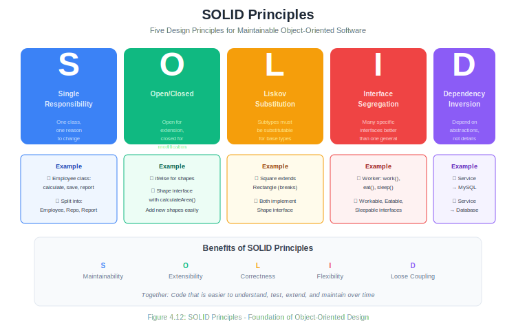
7.4.1 4.3.1 Single Responsibility Principle (SRP)
A class should have one, and only one, reason to change.
The Single Responsibility Principle states that a class should have only one job. “Reason to change” refers to the actors or stakeholders who might request changes.
Violation Example:
public class Employee {
private String name;
private double salary;
// Business logic - reason to change: business rules
public double calculatePay() {
// Calculate salary, overtime, bonuses
return salary * 1.0;
}
// Persistence - reason to change: database schema
public void save() {
// Save to database
Database.execute("INSERT INTO employees...");
}
// Reporting - reason to change: report format requirements
public String generateReport() {
// Create performance report
return "Employee Report: " + name + "...";
}
}This class has three reasons to change: business rules, database schema changes, and reporting requirements.
Refactored:
// Handles employee data and business rules
public class Employee {
private String name;
private double salary;
public double calculatePay() {
return salary * 1.0;
}
// Getters and setters
}
// Handles persistence
public class EmployeeRepository {
public void save(Employee employee) {
Database.execute("INSERT INTO employees...");
}
public Employee findById(Long id) {
// Load from database
}
}
// Handles reporting
public class EmployeeReportGenerator {
public String generateReport(Employee employee) {
return "Employee Report: " + employee.getName() + "...";
}
}Now each class has one reason to change.
Benefits:
- Classes are smaller and more focused
- Changes are isolated to specific classes
- Testing is simplified
- Code is easier to understand
7.4.2 4.3.2 Open/Closed Principle (OCP)
Software entities should be open for extension but closed for modification.
You should be able to add new functionality without changing existing code. This is achieved through abstraction and polymorphism.
Violation Example:
public class AreaCalculator {
public double calculateArea(Object shape) {
if (shape instanceof Rectangle) {
Rectangle r = (Rectangle) shape;
return r.width * r.height;
} else if (shape instanceof Circle) {
Circle c = (Circle) shape;
return Math.PI * c.radius * c.radius;
}
// Adding a new shape requires modifying this method!
return 0;
}
}Every time we add a new shape, we must modify AreaCalculator.
Refactored:
public interface Shape {
double calculateArea();
}
public class Rectangle implements Shape {
private double width;
private double height;
@Override
public double calculateArea() {
return width * height;
}
}
public class Circle implements Shape {
private double radius;
@Override
public double calculateArea() {
return Math.PI * radius * radius;
}
}
// New shapes can be added without modifying this class
public class AreaCalculator {
public double calculateArea(Shape shape) {
return shape.calculateArea();
}
}
// Adding a new shape - no modification to existing code
public class Triangle implements Shape {
private double base;
private double height;
@Override
public double calculateArea() {
return 0.5 * base * height;
}
}Now we can add new shapes by creating new classes, without modifying existing code.
Benefits:
- Reduced risk of breaking existing functionality
- New features can be added safely
- Promotes use of abstractions
- Easier to test new functionality in isolation
7.4.3 4.3.3 Liskov Substitution Principle (LSP)
Objects of a superclass should be replaceable with objects of its subclasses without affecting the correctness of the program.
Subtypes must be substitutable for their base types. If class B is a subtype of class A, you should be able to use B anywhere you use A without unexpected behavior.
Violation Example:
public class Rectangle {
protected int width;
protected int height;
public void setWidth(int width) {
this.width = width;
}
public void setHeight(int height) {
this.height = height;
}
public int getArea() {
return width * height;
}
}
public class Square extends Rectangle {
@Override
public void setWidth(int width) {
this.width = width;
this.height = width; // Maintain square invariant
}
@Override
public void setHeight(int height) {
this.width = height; // Maintain square invariant
this.height = height;
}
}This seems logical—a square is a rectangle—but it violates LSP:
public void testRectangle(Rectangle r) {
r.setWidth(5);
r.setHeight(4);
assert r.getArea() == 20; // Fails for Square! Area would be 16.
}Code written for Rectangle breaks when given a Square.
Refactored:
public interface Shape {
int getArea();
}
public class Rectangle implements Shape {
private int width;
private int height;
public Rectangle(int width, int height) {
this.width = width;
this.height = height;
}
@Override
public int getArea() {
return width * height;
}
}
public class Square implements Shape {
private int side;
public Square(int side) {
this.side = side;
}
@Override
public int getArea() {
return side * side;
}
}Now Square and Rectangle don’t have an inheritance relationship that creates behavioral conflicts.
Signs of LSP Violations:
- Subclasses that throw UnsupportedOperationException
- Subclasses that override methods to do nothing
- Type checking with instanceof before calling methods
- Unexpected behavior when substituting subtypes
7.4.4 4.3.4 Interface Segregation Principle (ISP)
Clients should not be forced to depend on interfaces they do not use.
Large interfaces should be split into smaller, more specific ones so that clients only need to know about methods relevant to them.
Violation Example:
public interface Worker {
void work();
void eat();
void sleep();
}
public class HumanWorker implements Worker {
@Override
public void work() { /* ... */ }
@Override
public void eat() { /* ... */ }
@Override
public void sleep() { /* ... */ }
}
public class RobotWorker implements Worker {
@Override
public void work() { /* ... */ }
@Override
public void eat() {
throw new UnsupportedOperationException("Robots don't eat");
}
@Override
public void sleep() {
throw new UnsupportedOperationException("Robots don't sleep");
}
}RobotWorker is forced to implement methods it doesn’t use.
Refactored:
public interface Workable {
void work();
}
public interface Eatable {
void eat();
}
public interface Sleepable {
void sleep();
}
public class HumanWorker implements Workable, Eatable, Sleepable {
@Override
public void work() { /* ... */ }
@Override
public void eat() { /* ... */ }
@Override
public void sleep() { /* ... */ }
}
public class RobotWorker implements Workable {
@Override
public void work() { /* ... */ }
}Now each class implements only the interfaces it needs.
Benefits:
- Classes aren’t forced to implement unused methods
- Interfaces are more cohesive
- Changes to one interface don’t affect unrelated clients
- Easier to understand what a class does
7.4.5 4.3.5 Dependency Inversion Principle (DIP)
High-level modules should not depend on low-level modules. Both should depend on abstractions. Abstractions should not depend on details. Details should depend on abstractions.
This principle is about decoupling. High-level business logic should not directly depend on low-level implementation details like databases or file systems.
Violation Example:
public class MySQLDatabase {
public void save(String data) {
// Save to MySQL
}
}
public class UserService {
private MySQLDatabase database; // Direct dependency on implementation
public UserService() {
this.database = new MySQLDatabase();
}
public void createUser(String userData) {
// Business logic
database.save(userData);
}
}UserService (high-level) directly depends on MySQLDatabase (low-level). Changing databases requires modifying UserService.
Refactored:
// Abstraction
public interface Database {
void save(String data);
}
// Low-level implementation depends on abstraction
public class MySQLDatabase implements Database {
@Override
public void save(String data) {
// Save to MySQL
}
}
public class MongoDatabase implements Database {
@Override
public void save(String data) {
// Save to MongoDB
}
}
// High-level module depends on abstraction
public class UserService {
private Database database; // Depends on interface, not implementation
public UserService(Database database) { // Dependency injection
this.database = database;
}
public void createUser(String userData) {
// Business logic
database.save(userData);
}
}Now both high-level (UserService) and low-level (MySQLDatabase) depend on the abstraction (Database).
Dependency Injection:
DIP is often implemented through dependency injection, where dependencies are provided to a class rather than created by it:
// Constructor injection
UserService service = new UserService(new MySQLDatabase());
// Or for testing
UserService testService = new UserService(new MockDatabase());Benefits:
- Loose coupling between components
- Easier testing (inject mocks)
- Flexibility to change implementations
- High-level modules are insulated from low-level changes
7.4.6 4.3.6 SOLID Summary
| Principle | Focus | Key Benefit |
|---|---|---|
| Single Responsibility | One reason to change | Maintainability |
| Open/Closed | Open for extension, closed for modification | Extensibility |
| Liskov Substitution | Subtypes are substitutable | Correctness |
| Interface Segregation | Small, specific interfaces | Flexibility |
| Dependency Inversion | Depend on abstractions | Loose coupling |
7.5 4.4 Design Patterns
Design patterns are reusable solutions to common problems in software design. They’re not code you can copy directly but templates for solving problems that can be adapted to many situations.
The seminal book “Design Patterns: Elements of Reusable Object-Oriented Software” by the Gang of Four (GoF) Gamma, Helm, Johnson, and Vlissides—cataloged 23 patterns in three categories: Creational, Structural, and Behavioral.

7.5.1 4.4.1 Creational Patterns
Creational patterns deal with object creation mechanisms, trying to create objects in a manner suitable to the situation.
7.5.1.1 Singleton Pattern
Intent: Ensure a class has only one instance and provide a global point of access to it.
When to Use:
- Exactly one instance is needed (database connection pool, configuration manager)
- Controlled access to a shared resource
- Global state that needs to be consistent
Structure:

Implementation:
public class DatabaseConnection {
private static DatabaseConnection instance;
private Connection connection;
// Private constructor prevents direct instantiation
private DatabaseConnection() {
this.connection = createConnection();
}
// Thread-safe lazy initialization
public static synchronized DatabaseConnection getInstance() {
if (instance == null) {
instance = new DatabaseConnection();
}
return instance;
}
public void query(String sql) {
// Execute query using connection
}
private Connection createConnection() {
// Create database connection
return null;
}
}
// Usage
DatabaseConnection db = DatabaseConnection.getInstance();
db.query("SELECT * FROM users");Cautions:
- Singletons introduce global state, which can make testing difficult
- They can hide dependencies (classes use the singleton without it being in their interface)
- Consider dependency injection instead in many cases
7.5.1.2 Factory Method Pattern
Intent: Define an interface for creating an object, but let subclasses decide which class to instantiate.
When to Use:
- A class can’t anticipate the class of objects it must create
- A class wants its subclasses to specify the objects it creates
- You want to localize the logic of which class to instantiate
Structure:
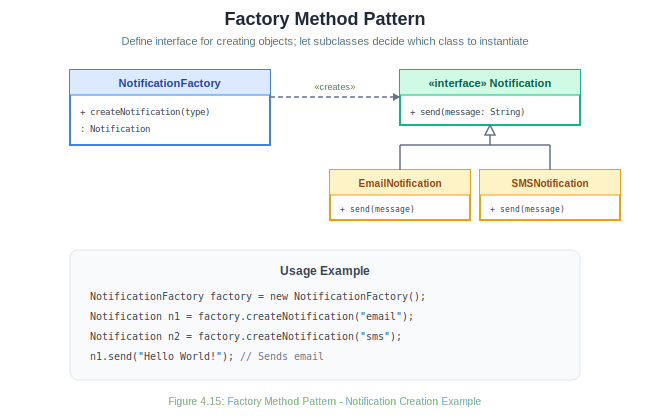
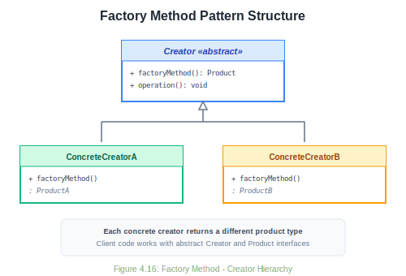
Implementation:
// Product interface
public interface Notification {
void send(String message);
}
// Concrete products
public class EmailNotification implements Notification {
@Override
public void send(String message) {
System.out.println("Sending email: " + message);
}
}
public class SMSNotification implements Notification {
@Override
public void send(String message) {
System.out.println("Sending SMS: " + message);
}
}
public class PushNotification implements Notification {
@Override
public void send(String message) {
System.out.println("Sending push notification: " + message);
}
}
// Creator with factory method
public class NotificationFactory {
public Notification createNotification(String type) {
switch (type.toLowerCase()) {
case "email":
return new EmailNotification();
case "sms":
return new SMSNotification();
case "push":
return new PushNotification();
default:
throw new IllegalArgumentException("Unknown type: " + type);
}
}
}
// Usage
NotificationFactory factory = new NotificationFactory();
Notification notification = factory.createNotification("email");
notification.send("Hello, World!");7.5.1.3 Builder Pattern
Intent: Separate the construction of a complex object from its representation, allowing the same construction process to create different representations.
When to Use:
- Object construction requires many parameters
- Some parameters are optional
- Object creation involves multiple steps
- Constructors with many parameters are confusing
Structure:
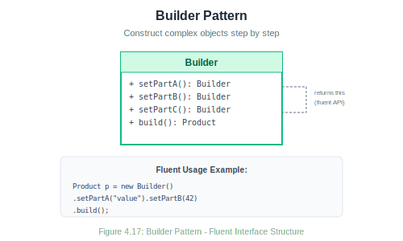
Implementation:
public class User {
private final String firstName; // Required
private final String lastName; // Required
private final String email; // Required
private final String phone; // Optional
private final String address; // Optional
private final int age; // Optional
private User(UserBuilder builder) {
this.firstName = builder.firstName;
this.lastName = builder.lastName;
this.email = builder.email;
this.phone = builder.phone;
this.address = builder.address;
this.age = builder.age;
}
// Getters...
public static class UserBuilder {
private final String firstName;
private final String lastName;
private final String email;
private String phone;
private String address;
private int age;
public UserBuilder(String firstName, String lastName, String email) {
this.firstName = firstName;
this.lastName = lastName;
this.email = email;
}
public UserBuilder phone(String phone) {
this.phone = phone;
return this;
}
public UserBuilder address(String address) {
this.address = address;
return this;
}
public UserBuilder age(int age) {
this.age = age;
return this;
}
public User build() {
return new User(this);
}
}
}
// Usage - fluent interface
User user = new User.UserBuilder("John", "Doe", "john@example.com")
.phone("555-1234")
.age(30)
.build();7.5.2 4.4.2 Structural Patterns
Structural patterns deal with object composition—how classes and objects are combined to form larger structures.
7.5.2.1 Adapter Pattern
Intent: Convert the interface of a class into another interface clients expect. Adapter lets classes work together that couldn’t otherwise because of incompatible interfaces.
When to Use:
- You want to use an existing class with an incompatible interface
- You’re integrating with third-party code you can’t modify
- You need to create a reusable class that cooperates with unrelated classes
Structure:
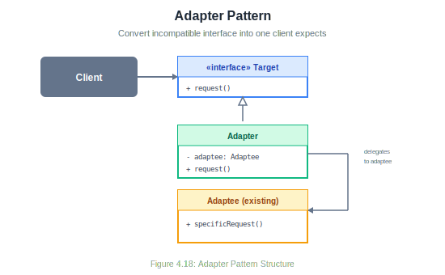
Implementation:
// Existing interface our code uses
public interface MediaPlayer {
void play(String filename);
}
// Existing class with incompatible interface (third-party library)
public class AdvancedVideoPlayer {
public void playMp4(String filename) {
System.out.println("Playing MP4: " + filename);
}
public void playVlc(String filename) {
System.out.println("Playing VLC: " + filename);
}
}
// Adapter makes AdvancedVideoPlayer compatible with MediaPlayer
public class VideoPlayerAdapter implements MediaPlayer {
private AdvancedVideoPlayer advancedPlayer;
public VideoPlayerAdapter() {
this.advancedPlayer = new AdvancedVideoPlayer();
}
@Override
public void play(String filename) {
if (filename.endsWith(".mp4")) {
advancedPlayer.playMp4(filename);
} else if (filename.endsWith(".vlc")) {
advancedPlayer.playVlc(filename);
} else {
throw new UnsupportedOperationException("Format not supported");
}
}
}
// Usage
MediaPlayer player = new VideoPlayerAdapter();
player.play("movie.mp4"); // Works through adapter7.5.2.2 Decorator Pattern
Intent: Attach additional responsibilities to an object dynamically. Decorators provide a flexible alternative to subclassing for extending functionality.
When to Use:
- Add responsibilities to individual objects without affecting other objects
- Responsibilities can be withdrawn
- Extension by subclassing is impractical or impossible
Structure:

Implementation:
// Component interface
public interface Coffee {
String getDescription();
double getCost();
}
// Concrete component
public class SimpleCoffee implements Coffee {
@Override
public String getDescription() {
return "Simple Coffee";
}
@Override
public double getCost() {
return 2.00;
}
}
// Base decorator
public abstract class CoffeeDecorator implements Coffee {
protected Coffee coffee;
public CoffeeDecorator(Coffee coffee) {
this.coffee = coffee;
}
@Override
public String getDescription() {
return coffee.getDescription();
}
@Override
public double getCost() {
return coffee.getCost();
}
}
// Concrete decorators
public class MilkDecorator extends CoffeeDecorator {
public MilkDecorator(Coffee coffee) {
super(coffee);
}
@Override
public String getDescription() {
return coffee.getDescription() + ", Milk";
}
@Override
public double getCost() {
return coffee.getCost() + 0.50;
}
}
public class SugarDecorator extends CoffeeDecorator {
public SugarDecorator(Coffee coffee) {
super(coffee);
}
@Override
public String getDescription() {
return coffee.getDescription() + ", Sugar";
}
@Override
public double getCost() {
return coffee.getCost() + 0.25;
}
}
// Usage - decorators can be stacked
Coffee coffee = new SimpleCoffee();
coffee = new MilkDecorator(coffee);
coffee = new SugarDecorator(coffee);
System.out.println(coffee.getDescription()); // Simple Coffee, Milk, Sugar
System.out.println(coffee.getCost()); // 2.757.5.2.3 Facade Pattern
Intent: Provide a unified interface to a set of interfaces in a subsystem. Facade defines a higher-level interface that makes the subsystem easier to use.
When to Use:
- You want to provide a simple interface to a complex subsystem
- There are many dependencies between clients and implementation classes
- You want to layer your subsystems
Structure:

Implementation:
// Complex subsystem classes
public class CPU {
public void freeze() { System.out.println("CPU: Freezing"); }
public void jump(long position) { System.out.println("CPU: Jumping to " + position); }
public void execute() { System.out.println("CPU: Executing"); }
}
public class Memory {
public void load(long position, byte[] data) {
System.out.println("Memory: Loading data at " + position);
}
}
public class HardDrive {
public byte[] read(long lba, int size) {
System.out.println("HardDrive: Reading " + size + " bytes from " + lba);
return new byte[size];
}
}
// Facade provides simple interface
public class ComputerFacade {
private CPU cpu;
private Memory memory;
private HardDrive hardDrive;
private static final long BOOT_ADDRESS = 0x0000;
private static final long BOOT_SECTOR = 0x001;
private static final int SECTOR_SIZE = 512;
public ComputerFacade() {
this.cpu = new CPU();
this.memory = new Memory();
this.hardDrive = new HardDrive();
}
// Simple interface hiding complex boot sequence
public void start() {
cpu.freeze();
byte[] bootData = hardDrive.read(BOOT_SECTOR, SECTOR_SIZE);
memory.load(BOOT_ADDRESS, bootData);
cpu.jump(BOOT_ADDRESS);
cpu.execute();
System.out.println("Computer started successfully!");
}
}
// Usage - client only needs to know about facade
ComputerFacade computer = new ComputerFacade();
computer.start();7.5.3 4.4.3 Behavioral Patterns
Behavioral patterns deal with communication between objects—how objects interact and distribute responsibility.
7.5.3.1 Strategy Pattern
Intent: Define a family of algorithms, encapsulate each one, and make them interchangeable. Strategy lets the algorithm vary independently from clients that use it.
When to Use:
- Many related classes differ only in their behavior
- You need different variants of an algorithm
- An algorithm uses data that clients shouldn’t know about
- A class defines many behaviors as conditional statements
Structure:

Implementation:
// Strategy interface
public interface PaymentStrategy {
void pay(double amount);
}
// Concrete strategies
public class CreditCardPayment implements PaymentStrategy {
private String cardNumber;
private String cvv;
public CreditCardPayment(String cardNumber, String cvv) {
this.cardNumber = cardNumber;
this.cvv = cvv;
}
@Override
public void pay(double amount) {
System.out.println("Paid $" + amount + " with credit card " +
cardNumber.substring(cardNumber.length() - 4));
}
}
public class PayPalPayment implements PaymentStrategy {
private String email;
public PayPalPayment(String email) {
this.email = email;
}
@Override
public void pay(double amount) {
System.out.println("Paid $" + amount + " via PayPal (" + email + ")");
}
}
public class CryptoPayment implements PaymentStrategy {
private String walletAddress;
public CryptoPayment(String walletAddress) {
this.walletAddress = walletAddress;
}
@Override
public void pay(double amount) {
System.out.println("Paid $" + amount + " in crypto to " +
walletAddress.substring(0, 8) + "...");
}
}
// Context
public class ShoppingCart {
private List<Item> items = new ArrayList<>();
private PaymentStrategy paymentStrategy;
public void addItem(Item item) {
items.add(item);
}
public void setPaymentStrategy(PaymentStrategy strategy) {
this.paymentStrategy = strategy;
}
public void checkout() {
double total = items.stream()
.mapToDouble(Item::getPrice)
.sum();
paymentStrategy.pay(total);
}
}
// Usage - switch strategies at runtime
ShoppingCart cart = new ShoppingCart();
cart.addItem(new Item("Book", 29.99));
cart.addItem(new Item("Pen", 4.99));
cart.setPaymentStrategy(new CreditCardPayment("4111111111111111", "123"));
cart.checkout(); // Paid $34.98 with credit card 1111
cart.setPaymentStrategy(new PayPalPayment("user@email.com"));
cart.checkout(); // Paid $34.98 via PayPal (user@email.com)7.5.3.2 Observer Pattern
Intent: Define a one-to-many dependency between objects so that when one object changes state, all its dependents are notified and updated automatically.
When to Use:
- Changes to one object require changing others, and you don’t know how many objects need to change
- An object should notify other objects without knowing who they are
- You need to implement event handling systems
Structure:

Implementation:
// Observer interface
public interface Observer {
void update(String message);
}
// Subject interface
public interface Subject {
void attach(Observer observer);
void detach(Observer observer);
void notifyObservers();
}
// Concrete Subject
public class NewsAgency implements Subject {
private String news;
private List<Observer> observers = new ArrayList<>();
@Override
public void attach(Observer observer) {
observers.add(observer);
}
@Override
public void detach(Observer observer) {
observers.remove(observer);
}
@Override
public void notifyObservers() {
for (Observer observer : observers) {
observer.update(news);
}
}
public void setNews(String news) {
this.news = news;
notifyObservers();
}
}
// Concrete Observers
public class NewsChannel implements Observer {
private String name;
public NewsChannel(String name) {
this.name = name;
}
@Override
public void update(String news) {
System.out.println(name + " received news: " + news);
}
}
public class MobileApp implements Observer {
@Override
public void update(String news) {
System.out.println("Mobile notification: " + news);
}
}
// Usage
NewsAgency agency = new NewsAgency();
NewsChannel cnn = new NewsChannel("CNN");
NewsChannel bbc = new NewsChannel("BBC");
MobileApp app = new MobileApp();
agency.attach(cnn);
agency.attach(bbc);
agency.attach(app);
agency.setNews("Breaking: New discovery on Mars!");
// Output:
// CNN received news: Breaking: New discovery on Mars!
// BBC received news: Breaking: New discovery on Mars!
// Mobile notification: Breaking: New discovery on Mars!
agency.detach(bbc);
agency.setNews("Update: Weather forecast changed");
// Output:
// CNN received news: Update: Weather forecast changed
// Mobile notification: Update: Weather forecast changed7.5.3.3 Template Method Pattern
Intent: Define the skeleton of an algorithm in an operation, deferring some steps to subclasses. Template Method lets subclasses redefine certain steps of an algorithm without changing the algorithm’s structure.
When to Use:
- You want to implement the invariant parts of an algorithm once and leave variable parts to subclasses
- You want to control subclass extensions
- Common behavior among subclasses should be factored and localized in a common class
Structure:
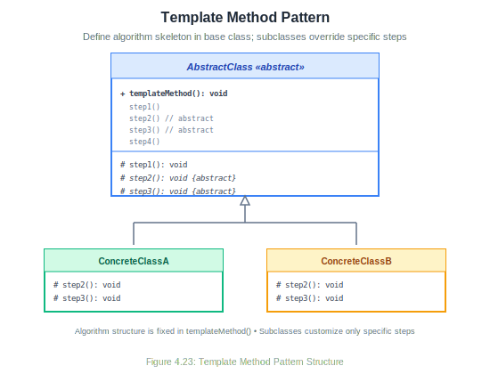
Implementation:
// Abstract class with template method
public abstract class DataProcessor {
// Template method - defines the algorithm skeleton
public final void process() {
readData();
processData();
writeData();
cleanup();
}
// Common step - same for all subclasses
private void readData() {
System.out.println("Reading data from source...");
}
// Abstract steps - must be implemented by subclasses
protected abstract void processData();
protected abstract void writeData();
// Hook method - optional override, has default implementation
protected void cleanup() {
System.out.println("Standard cleanup...");
}
}
// Concrete implementation for CSV
public class CSVProcessor extends DataProcessor {
@Override
protected void processData() {
System.out.println("Parsing CSV data, validating fields...");
}
@Override
protected void writeData() {
System.out.println("Writing to CSV output file...");
}
}
// Concrete implementation for JSON
public class JSONProcessor extends DataProcessor {
@Override
protected void processData() {
System.out.println("Parsing JSON objects, transforming structure...");
}
@Override
protected void writeData() {
System.out.println("Writing to JSON output file...");
}
@Override
protected void cleanup() {
System.out.println("Closing JSON streams and freeing memory...");
}
}
// Usage
DataProcessor csvProcessor = new CSVProcessor();
csvProcessor.process();
// Reading data from source...
// Parsing CSV data, validating fields...
// Writing to CSV output file...
// Standard cleanup...
DataProcessor jsonProcessor = new JSONProcessor();
jsonProcessor.process();
// Reading data from source...
// Parsing JSON objects, transforming structure...
// Writing to JSON output file...
// Closing JSON streams and freeing memory...7.5.4 4.4.4 Design Patterns Summary
| Pattern | Category | Intent |
|---|---|---|
| Singleton | Creational | Ensure one instance with global access |
| Factory Method | Creational | Defer instantiation to subclasses |
| Builder | Creational | Construct complex objects step by step |
| Adapter | Structural | Convert interface to expected interface |
| Decorator | Structural | Add responsibilities dynamically |
| Facade | Structural | Provide simple interface to complex subsystem |
| Strategy | Behavioral | Encapsulate interchangeable algorithms |
| Observer | Behavioral | Notify dependents of state changes |
| Template Method | Behavioral | Define algorithm skeleton, defer steps |
7.6 4.5 The Software Architecture Document (SAD)
A Software Architecture Document (SAD) communicates the architectural decisions for a system. It serves as a reference for developers, a communication tool for stakeholders, and a record of design rationale.
7.6.1 4.5.1 Purpose of the SAD
The SAD serves multiple purposes:
Communication: Explains the architecture to all stakeholders—developers, managers, operations, security teams.
Decision Record: Documents what was decided, why, and what alternatives were considered.
Onboarding: Helps new team members understand the system structure.
Evolution Guide: Provides context for future architectural changes.
Compliance: Satisfies documentation requirements in regulated industries.
7.6.2 4.5.2 SAD Structure
While formats vary, a typical SAD includes:
1. Introduction
1.1 Purpose
1.2 Scope
1.3 Definitions, Acronyms, Abbreviations
1.4 References
2. Architectural Goals and Constraints
2.1 Technical Goals
2.2 Business Goals
2.3 Constraints
3. Architectural Representation
3.1 Architectural Style
3.2 Architectural Views
4. Architectural Views
4.1 Logical View (Class/Component diagrams)
4.2 Process View (Activity/Sequence diagrams)
4.3 Development View (Package/Module organization)
4.4 Physical View (Deployment diagrams)
4.5 Use Case View (Use Case diagrams)
5. Quality Attributes
5.1 Performance
5.2 Scalability
5.3 Security
5.4 Reliability
5.5 Maintainability
6. Design Decisions
6.1 Decision 1: [Title]
- Context
- Decision
- Rationale
- Consequences
6.2 Decision 2: [Title]
...
7. Size and Performance Targets
8. Quality Assurance
Appendices
A. Glossary
B. Architecture Decision Records (ADRs)7.6.3 4.5.3 The 4+1 View Model
Philippe Kruchten’s 4+1 View Model is a popular way to organize architectural views:

Logical View: The object-oriented decomposition. Shows packages, classes, and their relationships. Addresses functional requirements.
Process View: The run-time behavior. Shows processes, threads, and their interactions. Addresses concurrency, distribution, and performance.
Development View: The static organization of software in its development environment. Shows modules, layers, and packages. Addresses build, configuration management.
Physical View: The mapping of software onto hardware. Shows nodes, networks, and deployment. Addresses availability, reliability, performance.
Use Case View (+1): The scenarios that tie other views together. Shows how the architecture supports key use cases.
7.6.4 4.5.4 Architecture Decision Records (ADRs)
Architecture Decision Records are a lightweight way to document individual architectural decisions. Each ADR captures one decision in a standardized format.
ADR Template:
# ADR-001: Use PostgreSQL as Primary Database
## Status
Accepted
## Context
We need a database for storing user data, orders, and product information.
The system needs to support complex queries, transactions, and eventual
scaling to millions of records.
## Decision
We will use PostgreSQL as our primary database.
## Rationale
- Strong ACID compliance for transactional integrity
- Excellent JSON support for semi-structured data
- Proven scalability (read replicas, partitioning)
- Team has existing PostgreSQL expertise
- Open source with strong community support
- Cloud providers offer managed PostgreSQL services
## Alternatives Considered
### MySQL
- Similar capabilities but less robust JSON support
- Team has less experience
### MongoDB
- Better for truly unstructured data
- Weaker transaction support
- Would require learning new paradigms
### DynamoDB
- Excellent scalability but vendor lock-in
- Limited query flexibility
- Higher cost at our scale
## Consequences
### Positive
- Reliable transactions for order processing
- Flexible schema evolution with JSON columns
- Easy to find developers with experience
### Negative
- Need to manage database operations (or use managed service)
- Eventual consistency challenges if we add read replicas
- May need sharding strategy for very high scale
## Date
2024-01-15
## Authors
- Jane Developer
- John ArchitectBenefits of ADRs:
- Decisions are documented when made, preserving context
- New team members can understand why things are the way they are
- Enables revisiting decisions when circumstances change
- Creates a decision log over time
- Encourages explicit, deliberate decision-making
7.7 4.6 Making Architectural Decisions
Good architecture doesn’t emerge by accident. It results from deliberate decisions made with awareness of trade-offs.
7.7.1 4.6.1 Factors in Architectural Decisions
Functional Requirements: What must the system do? Some functionality naturally suggests certain architectures.
Quality Attributes: Non-functional requirements like performance, scalability, security, and maintainability drive many architectural choices.
Constraints: Technology constraints, budget, timeline, team skills, regulatory requirements.
Business Context: Organizational structure, build vs. buy decisions, time to market pressures.
Technical Context: Existing systems, integration requirements, infrastructure.
7.7.2 4.6.2 Common Trade-offs
Performance vs. Maintainability: Optimized code is often harder to maintain. Caching improves performance but adds complexity.
Consistency vs. Availability: In distributed systems, you often can’t have both perfect consistency and continuous availability (CAP theorem).
Flexibility vs. Simplicity: More abstraction and indirection enable flexibility but increase complexity.
Security vs. Usability: Stronger security measures often make systems harder to use.
Build vs. Buy: Custom solutions fit exactly but take time; third-party solutions are faster but may not fit perfectly.
Monolith vs. Microservices: Monoliths are simpler to develop and deploy; microservices offer better scalability and team autonomy but add complexity.
7.7.3 4.6.3 Evaluating Architectures
How do you know if an architecture is good? Consider these evaluation approaches:
Scenario Analysis: Walk through key scenarios (both typical and exceptional) to see how the architecture handles them.
Quality Attribute Analysis: For each quality attribute, assess how the architecture supports it.
Risk Assessment: Identify the biggest risks and how the architecture addresses them.
Architecture Trade-off Analysis Method (ATAM): A formal evaluation method that identifies sensitivity points, trade-offs, and risks.
Prototype/Spike: Build a minimal implementation to validate technical feasibility.
7.8 4.7 Chapter Summary
Software architecture is the foundation on which successful systems are built. It defines the high-level structure, establishes patterns for communication and organization, and addresses the quality attributes that matter most to stakeholders.
Key takeaways from this chapter:
Software architecture encompasses the fundamental structures of a system and the decisions that are hard to change later. Good architecture enables systems to meet their quality requirements.
Architectural styles like layered architecture, MVC, microservices, and event-driven architecture provide templates for organizing systems. Each has strengths and trade-offs.
The SOLID principles guide class and module design: Single Responsibility, Open/Closed, Liskov Substitution, Interface Segregation, and Dependency Inversion.
Design patterns are reusable solutions to common problems. Creational patterns (Singleton, Factory, Builder) address object creation. Structural patterns (Adapter, Decorator, Facade) address object composition. Behavioral patterns (Strategy, Observer, Template Method) address object interaction.
The Software Architecture Document communicates architectural decisions to stakeholders. The 4+1 view model organizes multiple perspectives on the architecture.
Architecture Decision Records document individual decisions with their context, rationale, and consequences.
Architectural decisions involve trade-offs. Good architects make these trade-offs explicitly and document their reasoning.
7.9 4.8 Key Terms
| Term | Definition |
|---|---|
| Software Architecture | The fundamental structures of a software system and the discipline of creating them |
| Architectural Style | A named collection of architectural decisions common in a given context |
| Layered Architecture | Architecture organizing system into horizontal layers |
| MVC | Model-View-Controller; separates data, presentation, and control logic |
| Microservices | Architecture of small, independent, communicating services |
| Event-Driven Architecture | Architecture based on production and consumption of events |
| SOLID | Five design principles for maintainable object-oriented software |
| Design Pattern | A reusable solution to a common software design problem |
| Creational Pattern | Pattern dealing with object creation |
| Structural Pattern | Pattern dealing with object composition |
| Behavioral Pattern | Pattern dealing with object interaction |
| SAD | Software Architecture Document |
| ADR | Architecture Decision Record |
| 4+1 View Model | Architectural documentation using four views plus scenarios |
7.10 4.9 Review Questions
What is software architecture, and why is it important? How does it differ from software design?
Compare and contrast layered architecture and microservices architecture. What are the trade-offs, and when would you choose each?
Explain the MVC pattern. How do Model, View, and Controller interact? What are the benefits of this separation?
Describe each of the SOLID principles and provide an example of how each improves software design.
What is the Single Responsibility Principle? Identify a violation in code you’ve written or seen, and explain how you would refactor it.
Explain the Dependency Inversion Principle. How does dependency injection help implement this principle?
Compare the Factory Method and Builder patterns. When would you use each?
How does the Strategy pattern differ from a simple if-else chain? What are the benefits of using Strategy?
Describe the Observer pattern and give three real-world examples where it would be appropriate.
What is the purpose of a Software Architecture Document? Who are its audiences, and what do they need from it?
7.11 4.10 Hands-On Exercises
7.11.1 Exercise 4.1: Identifying Architectural Styles
For each of the following systems, identify which architectural style(s) would be most appropriate and explain why:
- A personal blog website
- Netflix’s streaming service
- A banking system processing transactions
- A real-time multiplayer game
- An IoT system monitoring factory equipment
7.11.2 Exercise 4.2: SOLID Refactoring
The following code violates SOLID principles. Identify which principles are violated and refactor the code:
public class Report {
private String content;
private String format;
public void generateReport(Database db, String query) {
// Get data from database
ResultSet data = db.execute(query);
// Format the report
if (format.equals("PDF")) {
content = formatAsPDF(data);
} else if (format.equals("HTML")) {
content = formatAsHTML(data);
} else if (format.equals("CSV")) {
content = formatAsCSV(data);
}
// Save to file
FileSystem.write("/reports/output", content);
// Send email notification
EmailClient.send("admin@company.com", "Report generated", content);
}
}7.11.3 Exercise 4.3: Implementing Design Patterns
Implement the following:
Factory Pattern: Create a
ShapeFactorythat creates different shapes (Circle, Rectangle, Triangle) based on input parameters.Decorator Pattern: Create a
Notificationsystem where notifications can be decorated with additional delivery methods (SMS, Email, Slack) stacked together.Observer Pattern: Create a weather monitoring system where
WeatherStationnotifies multiple displays (CurrentConditions, Statistics, Forecast) when measurements change.
7.11.4 Exercise 4.4: Architecture Analysis
For your semester project:
- Identify the primary quality attributes that matter most (e.g., performance, security, maintainability)
- Choose an architectural style and justify your choice
- Identify at least two design patterns you will use and explain where and why
- Document any trade-offs you’re making
7.11.5 Exercise 4.5: Software Architecture Document
Create a Software Architecture Document for your semester project, including:
- Introduction and goals
- Architectural style and rationale
- Component/Package diagram showing major components
- At least one sequence diagram for a key scenario
- Deployment view (how will the system be deployed?)
- At least two Architecture Decision Records (ADRs) for major decisions
7.11.6 Exercise 4.6: Pattern Recognition
Identify which design pattern is being used in each of the following code snippets:
Snippet A:
public class Logger {
private static Logger instance;
private Logger() {}
public static Logger getInstance() {
if (instance == null) {
instance = new Logger();
}
return instance;
}
}Snippet B:
public interface SortStrategy {
void sort(int[] array);
}
public class QuickSort implements SortStrategy { ... }
public class MergeSort implements SortStrategy { ... }
public class Sorter {
private SortStrategy strategy;
public void setStrategy(SortStrategy strategy) {
this.strategy = strategy;
}
public void performSort(int[] array) {
strategy.sort(array);
}
}Snippet C:
public interface Beverage {
double cost();
}
public class Espresso implements Beverage {
public double cost() { return 1.99; }
}
public class MilkDecorator implements Beverage {
private Beverage beverage;
public MilkDecorator(Beverage beverage) {
this.beverage = beverage;
}
public double cost() {
return beverage.cost() + 0.50;
}
}7.12 4.11 Further Reading
Books:
- Martin, R. C. (2017). Clean Architecture: A Craftsman’s Guide to Software Structure and Design. Prentice Hall.
- Gamma, E., Helm, R., Johnson, R., & Vlissides, J. (1994). Design Patterns: Elements of Reusable Object-Oriented Software. Addison-Wesley.
- Richards, M. & Ford, N. (2020). Fundamentals of Software Architecture. O’Reilly Media.
- Newman, S. (2021). Building Microservices (2nd Edition). O’Reilly Media.
- Bass, L., Clements, P., & Kazman, R. (2012). Software Architecture in Practice (3rd Edition). Addison-Wesley.
Online Resources:
- Refactoring Guru - Design Patterns: https://refactoring.guru/design-patterns
- Martin Fowler’s Architecture Guide: https://martinfowler.com/architecture/
- Microsoft Architecture Guides: https://docs.microsoft.com/en-us/azure/architecture/
- ADR GitHub Organization: https://adr.github.io/
7.13 References
Bass, L., Clements, P., & Kazman, R. (2012). Software Architecture in Practice (3rd Edition). Addison-Wesley.
Buschmann, F., Meunier, R., Rohnert, H., Sommerlad, P., & Stal, M. (1996). Pattern-Oriented Software Architecture Volume 1: A System of Patterns. Wiley.
Fowler, M. (2002). Patterns of Enterprise Application Architecture. Addison-Wesley.
Gamma, E., Helm, R., Johnson, R., & Vlissides, J. (1994). Design Patterns: Elements of Reusable Object-Oriented Software. Addison-Wesley.
Kruchten, P. (1995). The 4+1 View Model of Architecture. IEEE Software, 12(6), 42-50.
Martin, R. C. (2000). Design Principles and Design Patterns. Retrieved from http://www.objectmentor.com/
Martin, R. C. (2017). Clean Architecture: A Craftsman’s Guide to Software Structure and Design. Prentice Hall.
Newman, S. (2021). Building Microservices (2nd Edition). O’Reilly Media.
Richards, M., & Ford, N. (2020). Fundamentals of Software Architecture: An Engineering Approach. O’Reilly Media.